Overworld
Les Contrées
Sept nouvelles terres dans l'Overworld, les créatures qui y vivent, les villages des pèlerins venus s'y installer et les ruines de ceux qui les ont précédés. Tout naît avec le monde, sur les nouveaux chunks uniquement : il suffit de partir explorer.
Les sept contrées
Chacune prend la place, par grandes taches, d'un biome vanilla qui lui ressemble : le relief reste celui du jeu, et les structures du jeu (puits de mine, chambres des épreuves, portails en ruine, forts, manoirs, temples de la jungle…) y apparaissent comme dans les biomes qu'elles remplacent. Les terres rares (marais, badlands) sont prises plus largement que les forêts, pour qu'on les trouve.
| Contrée | Remplace | Ce qu'on y voit |
|---|---|---|
| Sylve des Lucioles | forêts, bouleaux, forêt noire | mousse luisante, fougères, champignons-lanternes géants, lucioles |
| Taïga des Mammouths | taïgas | permafrost, pierres runiques, troupeaux de mammouths |
| Plaine des Colosses | plaines, prairies | squelettes et épées de géants à demi enterrés, menhirs |
| Marais d'Ambre | marais, mangroves | tourbe, roseaux, mares d'ambre lumineux, arbres morts |
| Canyons de Solbrûle | badlands | bandes de terre cuite, cheminées de fée, arches de grès |
| Cimes Prismatiques | pics, pentes enneigées | flèches et éclats de cristal prismatique |
| Jungle des Anciens | jungles | ruines de pierre à glyphes, lampes gravées |
Le bestiaire
| Créature | Où | Ce qu'il faut savoir |
|---|---|---|
| Cerf lumifère | Sylve | s'apprivoise aux baies lumineuses, devient une monture rapide ; bois lumineux |
| Mammouth laineux | Taïga | se tond, riposte ; apprivoisé (blé), une monture à deux places |
| Aurochs | Colosses, plaines | se trait ; frappez-en un et le troupeau charge |
| Fennec | Solbrûle, désert | s'apprivoise aux baies sucrées, s'assoit, déterre un trésor par jour |
| Crapaud géant | Marais | s'apprivoise aux boules de slime : une monture qui bondit |
| Toucan, Harfang | Jungle, neiges | des oiseaux, pour le décor |
| Feu follet | Marais, la nuit | vous attire, puis vous aveugle ; le jour l'éteint |
| Tréant flétri | Sylve, la nuit | racines qui immobilisent ; le feu lui fait double mal |
| Scorpion géant | Solbrûle | attend enterré, empoisonne, carapace solide de face |
| Raptor | Jungle | chasse en meute et bondit |
| Yéti | Cimes | lance des blocs de glace, rugit pour ralentir |
| Golem de cristal | Cimes, observatoires | statue jusqu'à ce qu'on l'approche ; renvoie les projectiles |
| Rôdeur des marais | Marais | entraîne sa proie sous l'eau |
| Brigands | camps, routes | épéistes et arbalétriers |
Combien il y en a
Mesuré sur la graine de test, dans un carré de 7,7 km de côté (59 km², 56 % de terres). Une autre graine donne d'autres chiffres, dans les mêmes proportions.
| Quoi | Densité | Plus proche voisin (médiane) |
|---|---|---|
| Les sept contrées | 31 % des terres | Sylve 12 %, Colosses 9 %, Taïga et Jungle 4 %, Marais, Solbrûle, Cimes 1 % chacune |
| Sites (tous) | 5,4 / km² | un tous les 400 blocs environ |
| Villages des pèlerins | 1,0 / km² | 500 blocs |
| Villages du jeu | 0,5 / km² | 570 blocs |
| Merveilles | 0,3 / km² | une par carré de 1 600 blocs au plus |
| Épreuves | ~0,3 / km² | une par carré de 1 600 blocs au plus, jamais sur la case de la merveille |
| Autels des vœux, cairns, tombes | ~2 / ~4 / ~1,5 par km² | calculé d'après leur rareté, moins sur les reliefs |
Les matières des Contrées
Toutes dessinées par du code, en pixel art 16×16 (32×32 pour les pages de la Chronique).
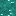
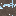
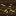
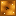
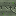
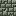
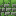
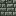
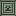
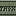
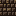
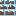
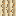
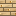
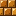
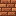
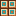
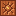
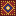
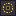
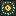
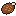
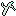
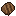
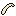
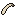
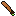
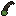
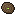
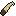
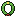
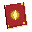